Transfer_Learning_and_Vision_Transformers.md
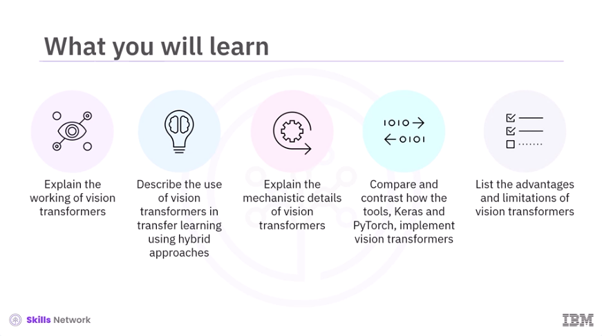
Welcome to Transfer Learning and Vision Transformers. After watching this video, you'll be able to explain the working of vision transformers, describe the use of vision transformers in transfer learning using hybrid approaches, explain the mechanistic details of vision transformers, compare and contrast how the tools Keras and PyTorch implement vision transformers, and list the advantages and limitations of vision transformers.
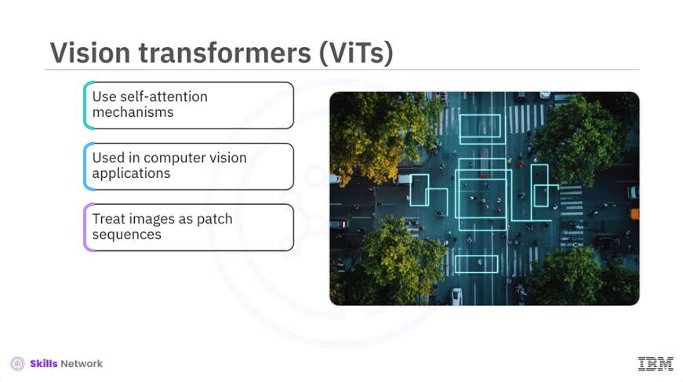
Vision transformers, also known as ViTs, leverage self-attention mechanisms originally developed for natural language processing for computer vision applications. They treat images as sequences of patches and model relationships between them. Vision transformers demonstrate remarkable performance on a wide range of visual tasks, particularly when large datasets and computational resources are available.
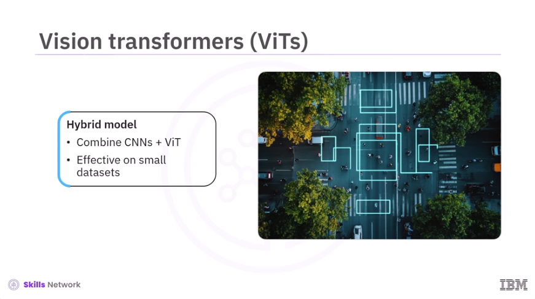
However, a hybrid model combining convolutional neural networks, CNNs, and vision transformers could be useful if the training dataset is small. Let's dive deep into the working of vision transformers.
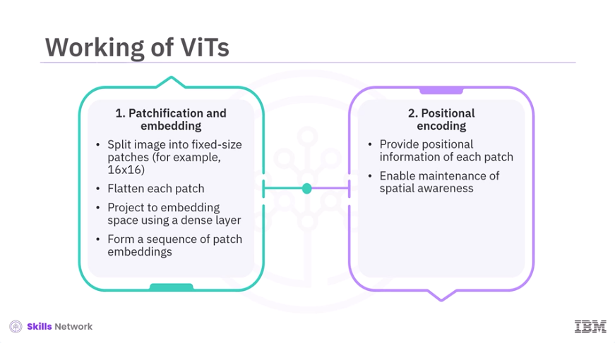
First, vision transformers divide an input image into fixed-size patches, for example, 16 by 16 pixels. Each patch is then flattened and projected into a higher-dimensional embedding space using a dense and fully-connected layer. This process transforms the image into a sequence of patch embeddings analogous to word embeddings in natural language processing. Next, positional encodings provide information about the position of each patch in the original image, enabling the model to maintain spatial awareness throughout the processing pipeline.
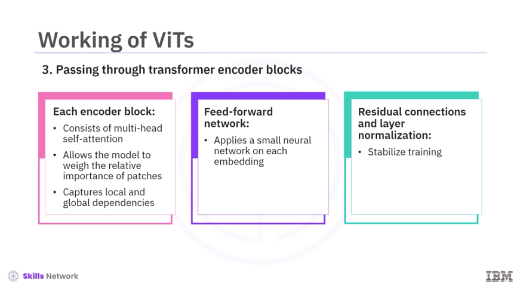
Further, the sequence of patch embeddings, along with positional information, is passed through a stack of transformer encoder blocks. Each block consists of multi-head self-attention, which allows the model to weigh the importance of each patch relative to others, capturing both local and global dependencies across the image. This is followed by a feed-forward network, which applies a small neural network to each patch embedding independently. In addition, residual connections and layer normalization help stabilize training and enable deeper architectures.
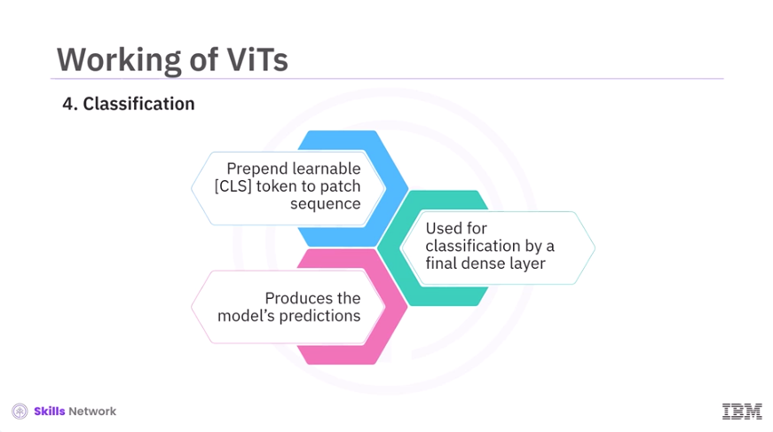
A special learnable token, often called a classification or CLS token, is prepended to the sequence of patches. After passing through the transformer blocks, the output corresponding to this token is used for classification by a final dense layer, producing the model's predictions.
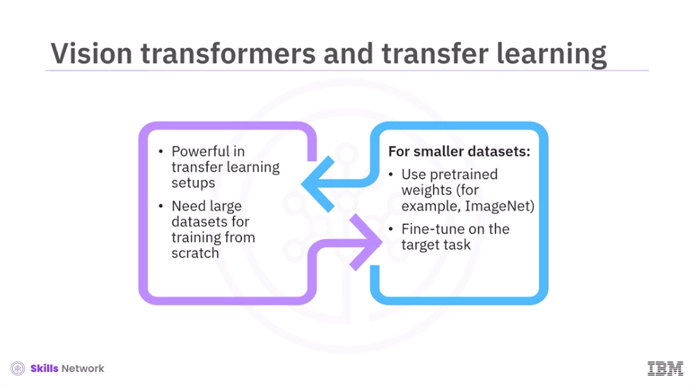
Vision transformers are very powerful in transfer learning scenarios. They often require large datasets to train from scratch. However, transfer learning using pre-trained weights from large datasets, such as ImageNet or other pre-trained network models, enables visual transformers to perform well even on smaller datasets. This requires fine-tuning on the target task.
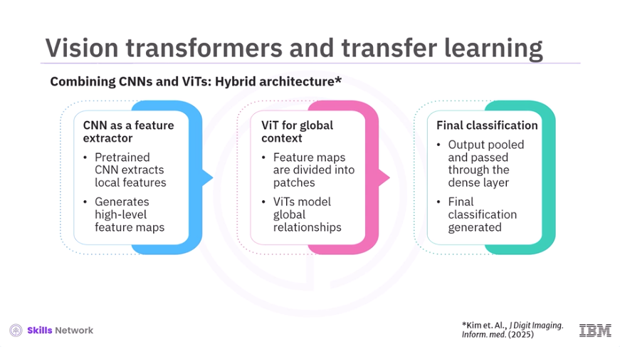
A common and effective strategy is to combine CNNs and vision transformers in a hybrid architecture. A pre-trained CNN processes the input image to extract local features, generating high-level feature maps. The feature maps are divided into patches and fed into a vision transformer, which models global relationships and context using self-attention. The output is then pooled and passed through a dense layer for final classification. This hybrid approach leverages the local feature extraction strengths of CNNs and the global context modeling capabilities of vision transformers. This often results in improved performance, especially when data is limited or computational efficiency is a concern.
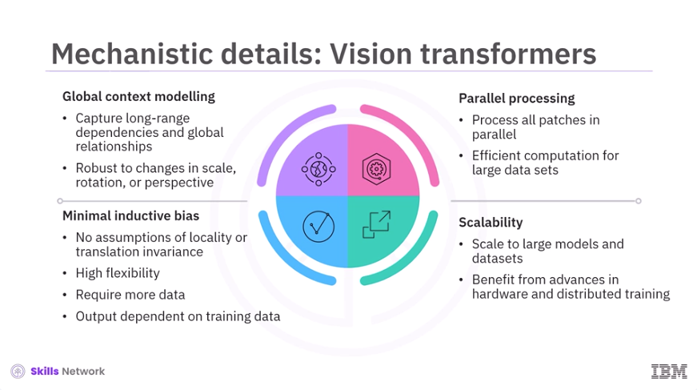
Next, let's discuss the mechanistic details of vision transformers. First, there is global context modeling. Vision transformers excel at capturing long-range dependencies and global relationships within an image, making them robust to changes in scale, rotation, or perspective. Next, all patches are processed in parallel, leading to efficient computation especially for large datasets. Unlike CNNs, vision transformers show minimal inductive bias. They do not assume locality or translation invariance, making them highly flexible. However, they also require more data, and their output is highly dependent on training data. Vision transformers can scale to very large models and datasets and thus benefit from advances in hardware and distributed training.
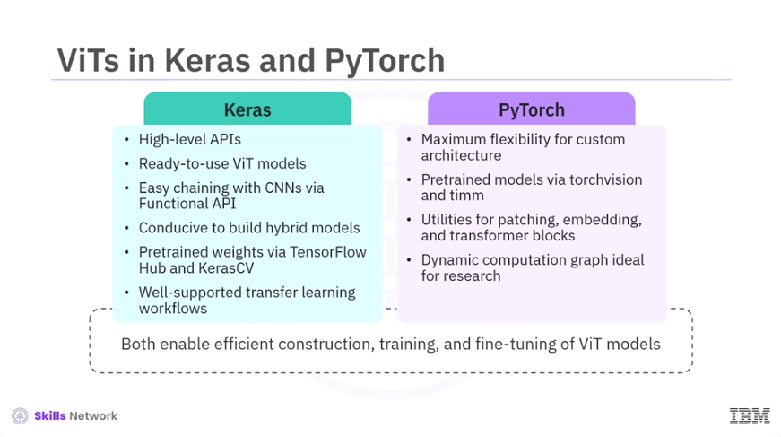
Both Keras and PyTorch provide robust tools for implementing vision transformers. Keras offers high-level application processing interfaces, APIs, and ready-to-use vision transformer implementations. The functional API allows easy chaining of CNNs and ViTs, making it straightforward to build hybrid models. Pre-trained ViT weights are available via TensorFlow Hub, and KerasCV and transfer learning workflows are well-supported. On the other hand, PyTorch provides maximum flexibility for custom architectures. Libraries like torchvision and timm supply pre-trained ViT models and utilities for patch extraction, embedding, and transformer blocks. PyTorch's dynamic computation graph is particularly suited for research and experimentation. While these frameworks differ in syntax and abstraction level, both enable efficient construction, training, and fine-tuning of ViT models for a variety of computer vision tasks.
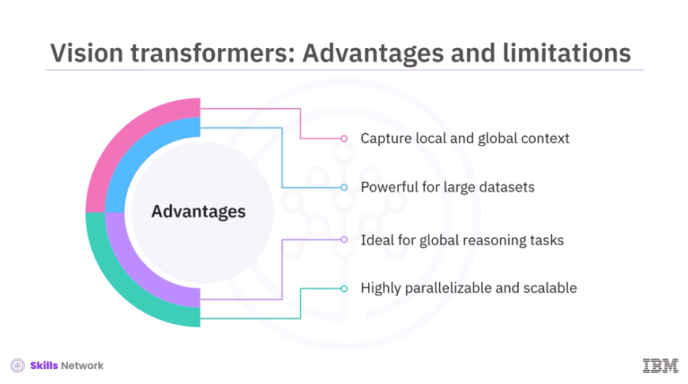
Finally, let's understand the advantages and limitations of vision transformers. Advantages include the ability to capture both local and global image context. They are powerful for large datasets and tasks requiring global reasoning. They are also highly parallelizable and scalable.
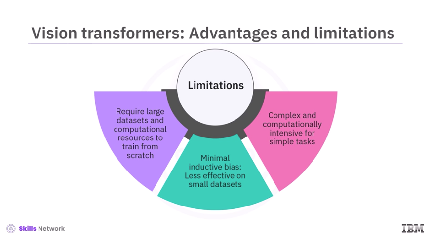
Limitations include the need for large datasets and significant computational resources to train from scratch. Their minimal inductive bias can make them less effective on small datasets without transfer learning or hybridization. They are also more complex and computationally intensive than lightweight CNNs for simple tasks.
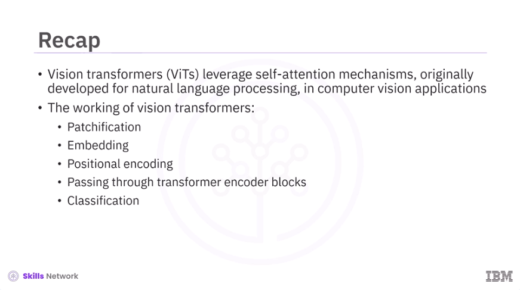
In this video, you learned Vision transformers, ViTs, leverage self-attention mechanisms originally developed for natural language processing in computer vision applications. The working of vision transformers involves patchification, embedding, positional encoding, passing through transformer encoder blocks, and classification.
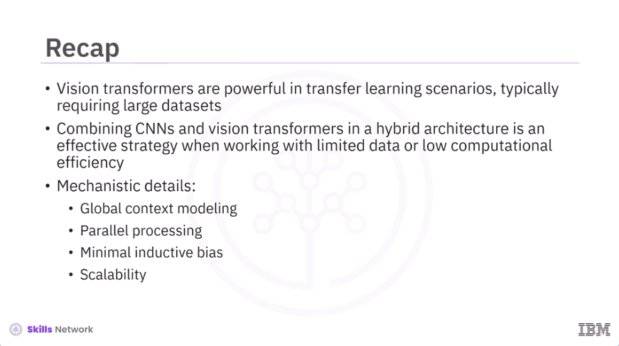
Vision transformers are powerful in transfer learning scenarios, typically requiring large datasets. Combining CNNs and vision transformers in a hybrid architecture is an effective strategy when working with limited data or low computational efficiency. Mechanistic details of vision transformers include global context modeling, parallel processing, minimal inductive bias, and scalability.
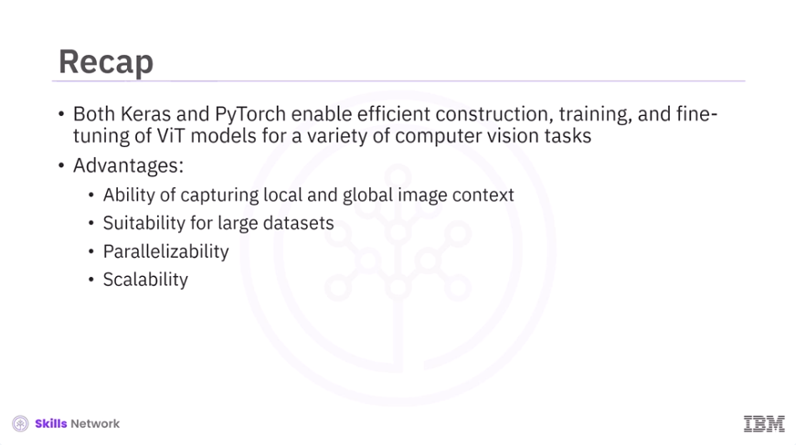
Both Keras and PyTorch enable efficient construction, training, and fine-tuning of ViT models for a variety of computer vision tasks. Advantages of visual transformers include the ability to capture local and global image context, suitability for large datasets, parallelizability, and scalability.
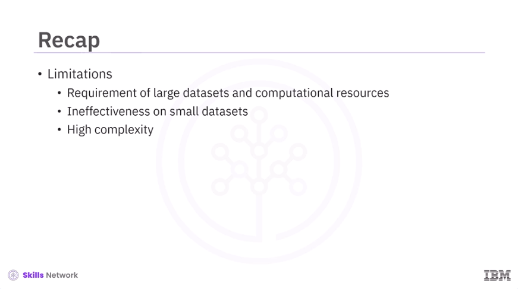
Limitations include requirement of large datasets and computational resources, ineffectiveness on small datasets, and high complexity.